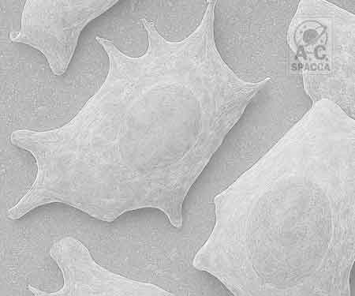
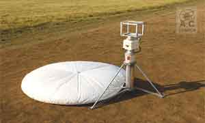

Células Senecente
Células que deixam de se dividir, mas continuam metabolicamente ativas, acumulam-se nos tecidos e causam uma aglomeração. Essa pesquisa direciona as demais e busca entender esses mecanismos para desenvolver formas de estimular a eliminação dessas células, promovendo saúde e longevidade.
"Fato à Ficção: A base científica para o primeiro capítulo no meu livro O FUTURO MUDOU. E claro, para o resto de TUDO!"
Biologia Incubada
Automatização aplicados ao desenvolvimento biológico em ambientes controlados, buscando espécies adaptadas a condições extremas, como em ambientes altamente estéreis, sendo subterrâneos, subaquáticos ou de baixa pressão atmosférica.
"Fato à Ficção: Para atingir eficiência nessa transição eu vivi tudo o que meu Livro, FORA DA CERCA, expõe. Quase literalmente!"

Panspermia
Metodologias voltadas ao cultivo de espécies vegetais de origem exógena. O objetivo central é identificar substâncias bioativas capazes de promover a eliminação de células senescentes do organismo humano. Trata-se de uma missão de elevada complexidade, conduzida em ambientes hostis, que resultou em significativas perdas e avanços limitados. A proposta é que, por meio desse processo, sejam identificados novos compostos bioativos. Para isso, separamos incubadoras subterrâneas e subaquáticas com condições controladas de oxigênio, temperatura, umidade e luminosidade, onde cultivamos espécies vegetais como possíveis fontes de alimento, e outras sem nenhum controle, tornando-as um ambiente estéril, quente e seco, onde a evolução é livre para ocorrer. Continuamos a aglomerar coletas aguardando reação ou uma emissão que a provoque.
"Fato à Ficção: Testamos NMN, Espermidina e Fisetina — compostos que prometem muito, mas entregam pouco. Sou o primeiro a buscar o 'Mato de Outro Mundo'. Quem sabe ainda terei 'Tempo' para compartilhar um terceiro livro!"

FORA DA CERCA
Sete Contos da Roça
Sete contos arrepiantes contadas de sete formas diferentes, todos cheios de aventuras, mistérios e surpresas. Mas cada deixando aquele desejo de ter mais. Uma coleção que não será somente lida e relida, mas também contada onde houver oportunidade. Personagens inesquesiveis em acontecimentos estranhos e assustadores.
É como diria nossa narradora: "É pra rir e é pra chorar, é pra sentir medo, e é pra se espantar, mas fora da cerca, é mesmo para se esbaldar!".


"Normalmente não leio minhas próprias matérias depois de publicadas, mas esse eu leio."

O FUTURO MUDOU
Revelações da Inteligência Artificial
Nove revelações apresentam nove contos eletrizantes que exploram o impacto da chegada da inteligência artificial sobre o futuro que a humanidade acreditava conhecer. Das ruínas assombradas, de uma colônia lunar, das profundezas iluminadas por cidades, essas aventuras desvendam a beleza aterradora de um mundo remodelado pela mente mais inteligente que o universo talvez nunca tivesse pretendido conceber. Essas nove histórias não são alertas. São revelações. Deixando a dúvida: Isso é ficção ou realidade?

Um jogo mobile de aventura e mistério fantasmagorico no estilo arcade em desenvolvimento para lançamento no inicio de 2026.


Venda sob prescrição médica. Consulte nossa equipe para tratamento destinado à cessação do uso excessivo de cigarros.
Curiosidade Científica: Esse é o meio usado pelo CELOBI-1 para transporte de substâncias bioativas como Flavonoides, Catequinas, Carotenoides, Polifenóis e o Ômega‑3!